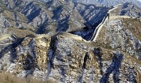

Las 7 maravillas del mundo moderno
Las siete maravillas del mundo moderno son un conjunto de obras arquitectónicas y escultóricas que fueron elegidas en un concurso internacional, realizado por una empresa privada, New Open World Corporation, y cuyos resultados fueron dados a conocer en el año 2007 en la ciudad de Lisboa, Portugal.
El concurso fue organizado por el cineasta suizo Bernard Weber, fundador de la empresa New Open World Corporation, con el objetivo de promover el patrimonio cultural mundial, mediante la votación de las personas de todo el mundo.
La votación se realizó por internet, por medio de mensajes de texto y llamadas telefónicas, y participaron más de cien millones de personas de todo el mundo.
Las siete maravillas del mundo moderno son:
-  La Gran Muralla China, en China.😎
- La ciudad de Petra, en Jordania.
- El Cristo Redentor, en Brasil.
- La ciudad de Machu Picchu, en Perú.
- La ciudad de Chichén Itzá, en México.
- El Coliseo de Roma, en Italia.
- El Taj Mahal, en India.
La Gran Muralla China
La Gran Muralla China es una fortificación china construida entre los siglos V a. C. y XVI para proteger la frontera norte del Imperio chino durante las sucesivas dinastías imperiales de los ataques de los nómadas xiongnu de Mongolia y Manchuria.
La Gran Muralla China es una de las siete maravillas del mundo moderno, y fue declarada Patrimonio de la Humanidad por la Unesco en el año 1987.
La Gran Muralla China tiene una longitud
de 8.851,8 kilómetros, y se extiende desde la frontera con Corea, en el este, hasta el desierto de Gobi, en el oeste.
La Gran Muralla China es una de las mayores obras de ingeniería de la historia, y fue construida con piedra, ladrillo, tierra apisonada, madera y otros materiales.
La Gran Muralla China es una de las mayores atracciones turísticas de China, y cada año es visitada por millones de personas de todo el mundo.
La ciudad de Petra
La ciudad de Petra es una antigua ciudad nabatea ubicada en el sur de Jordania, y fue fundada en el siglo VI a. C. por los edomitas.
La ciudad de Petra es una de las siete maravillas del mundo moderno, y fue declarada Patrimonio de la Humanidad por la Unesco en el año 1985.
La ciudad de Petra es conocida como la Ciudad Rosa, debido al color de la piedra con la que fue construida.
La ciudad de Petra es una de las mayores atracciones turísticas de Jordania, y cada año es visitada por millones de personas de todo el mundo.
El Cristo Redentor
El Cristo Redentor es una estatua de Jesús de Nazaret, ubicada en la cima del cerro del Corcovado, en la ciudad de Río de Janeiro, Brasil.
El Cristo Redentor es una de las siete maravillas del mundo moderno, y fue declarado Patrimonio de la Humanidad por la Unesco en el año 2007.
El Cristo Redentor tiene una altura de 38 metros, y fue construido entre los años 1922 y 1931.
El Cristo Redentor es una de las mayores atracciones turísticas de Brasil, y cada año es visitado por millones de personas de todo el mundo.
La ciudad de Machu Picchu
La ciudad de Machu Picchu es una antigua ciudad inca ubicada en la cordillera de los Andes, en el sur de Perú.
La ciudad de Machu Picchu es una de las siete maravillas del mundo moderno, y fue declarada Patrimonio de la Humanidad por la Unesco en el año 1983.
La ciudad de Machu Picchu fue construida en el siglo XV, y fue descubierta en el año 1911 por el explorador estadounidense Hiram Bingham.
La ciudad de Machu Picchu es una de las mayores atracciones turísticas de Perú, y cada año es visitada por millones de personas de todo el mundo.
La ciudad de Chichén Itzá
La ciudad de Chichén Itzá es una antigua ciudad maya ubicada en el estado de Yucatán, en el sureste de México.
La ciudad de Chichén Itzá es una de las siete maravillas del mundo moderno, y fue declarada Patrimonio de la Humanidad por la Unesco en el año 1988.
La ciudad de Chichén Itzá fue construida en el siglo VI, y fue descubierta en el año 1841 por el explorador estadounidense John Lloyd Stephens.
La ciudad de Chichén Itzá es una de las mayores atracciones turísticas de México, y cada año es visitada por millones de personas de todo el mundo.
El Coliseo de Roma
El Coliseo de Roma es un anfiteatro ubicado en el centro de la ciudad de Roma, Italia.
El Coliseo de Roma es una de las siete maravillas del mundo moderno, y fue declarado Patrimonio de la Humanidad por la Unesco en el año 1980.
El Coliseo de Roma fue construido entre los años 72 y 80, y fue utilizado para la celebración de espectáculos públicos, como las luchas de gladiadores.
El Coliseo de Roma es una de las mayores atracciones turísticas de Italia, y cada año es visitado por millones de personas de todo el mundo.
El Taj Mahal
El Taj Mahal es un mausoleo ubicado en la ciudad de Agra, en el estado de Uttar Pradesh, en el norte de la India.
El Taj Mahal es una de las siete maravillas del mundo moderno, y fue declarado Patrimonio de la Humanidad por la Unesco en el año 1983.
El Taj Mahal fue construido entre los años 1631 y 1653, y fue encargado por el emperador mogol Shah Jahan en memoria de su esposa favorita, Mumtaz Mahal.
El Taj Mahal es una de las mayores atracciones turísticas de la India, y cada año es visitado por millones de personas de todo el mundo.